Gastos¶
La aplicación Gastos de Odoo optimiza la gestión de los gastos. Después de que un empleado envíe sus gastos en Odoo, los equipos de gestión y contabilidad deberán revisarlos. Si se aprueban, se pueden procesar los pagos y devolverlos al empleado para su reembolso.
Ver también
Establecer categorías de gastos¶
El primer paso para llevar un seguimiento de los gastos es configurar los diferentes tipos de gastos de la empresa (como categorías de gastos en Odoo). Cada categoría puede ser tan específica o general como sea necesario. Vaya a para ver las categorías de gastos actuales en una vista de lista predeterminada.
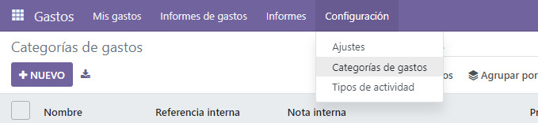Si desea crear una nueva categoría de gastos haga clic en Nuevo. Aparecerá un formulario de producto con un campo denominado Nombre de producto.
Nota
Las categorías de gastos se gestionan como productos. El formulario de categoría de gasto usa el formulario estándar de producto en Odoo, y la información ingresada es similar. Los productos de gastos se denominarán como categorías de gastos a lo largo de este documento ya que el menú principal se refiere a estos como Categorías de gastos.
Solo son necesarios dos campos, nombre del producto y unidad de medida. Introduzca el nombre del producto en el campo y seleccione la unidad de medida en el menú desplegable (la mayoría de los productos se establecerán en unidades).
Truco
La aplicación Ventas le permite crear y editar las especificaciones de las unidades de medida (por ejemplo, unidades, millas, noches, etc.). Vaya a la aplicación y asegúrese de que la opción Unidades de medida esté habilitada en la sección Catálogo de productos. Haga clic en el enlace interno Unidades de medida para ver, crear y editar las unidades de medida.

El campo Gasto del formulario de producto se completa con un valor de 0.00 de forma predeterminada. Cuando se debe reembolsar un gasto específico por un precio determinado, introduzca esa cantidad en el campo Gasto. De lo contrario, deje el campo Gasto en 0.00, y los empleados informarán el coste real cuando envíen un informe de gastos.
Nota
El campo Costos siempre está visible en el formulario de categoría de gastos, pero el campo Precio de venta solo estará visible si se selecciona Precio de venta en la sección Volver a facturar gastos. De lo contrario, el campo Precio de venta estará oculto.
Example
Estos son algunos ejemplos de cuándo es mejor establecer un costo específico en un producto en lugar de dejar el costo en 0.00:
Alimentos: Establezca
0.00en la etiqueta costo. Cuando un empleado registra un gasto por una comida, se debe introducir el importe real de la factura y se le reembolsará dicho importe. Un gasto por una comida de 95.23 dólares equivaldría a un reembolso de 95.23 dólares.Kilometraje: Establezca
0.30en la etiqueta costo. Cuando un empleado registra un gasto por «kilometraje», se debe introducir el número de km recorridos en el campo cantidad, y se le reembolsarán 0.19 por kilómetro introducido. Un gasto de 100 km equivaldría a un reembolso de 19.00 dólares.Estacionamiento mensual: establezca el costo en
75.00. Cuando un empleado registre un gasto por «estacionamiento mensual», el reembolso será de $75.00.Gastos: establezca el costo en
0.00. Cuando un empleado registra un gasto que no es un alimento, kilometraje o estacionamiento mensual, utilice el producto genérico gastos. Un gasto por una laptop de $350.00 se registraría como un producto de gastos, y el reembolso sería de $350.00.
Seleccione una cuenta de gastos si usa la aplicación Contabilidad de Odoo. Se recomienda consultar con el departamento de contabilidad para determinar la cuenta correcta a la que hacer referencia en este campo, ya que afectará a los reportes.
Establezca un impuesto para cada producto en los campos impuestos del vendedor e impuestos del cliente, si es necesario. Una buena práctica sería utilizar un impuesto configurado con impuesto incluido en el precio. Si lo establece, los impuestos se configurarán automáticamente.
Registrar gastos¶
Crear un nuevo gasto de manera manual¶
Para registrar un nuevo gasto, comience en el tablero principal de la aplicación , que presenta la vista predeterminada Mis gastos. También se puede acceder a esta vista desde .
Para comenzar, haga clic en Nuevo y complete los distintos campos del formulario.
Descripción: introduzca una breve descripción del gasto en el campo descripción. Debe ser breve e informativa, como
almuerzo con un clienteuhotel para una conferencia.Categoría: seleccione la categoría de gasto del menú desplegable que más se aproxime al gasto. Por ejemplo, un boleto de avión sería apropiado para un gasto de categoría llamada Viajes.
Total: introduzca el importe total pagado por el gasto de una de estas dos formas:
Si el gasto corresponde a un solo artículo/gastos y la categoría seleccionada correspondía a un solo artículo, introduzca el costo en el campo total (el campo cantidad está oculto).
Si el gasto es por varios elementos del mismo artículo/gasto con un precio fijo, se muestra el precio por unidad. Introduzca la cantidad en el campo cantidad y el costo total se actualizará automáticamente con el total correcto (el precio unitario x la cantidad = el total). Tenga en cuenta que la palabra «total» no aparece, el coste total simplemente aparece debajo de cantidad.
Example
Por ejemplo, en el caso del kilometraje recorrido, el precio unitario se completa como el costo por kilómetro. Establezca el número de km recorridos en cantidad y se calculará el total.
Impuestos incluidos: si se han configurado impuestos en la categoría de gasto, el porcentaje de impuestos y el importe, aparecerán automáticamente después de introducir el total o la cantidad.
Nota
Cuando se configura un impuesto en una categoría de gasto, el valor de impuestos incluidos se actualizará en tiempo real a medida que se actualice el total o la cantidad.
Empleado: gracias al menú desplegable, seleccione el empleado para el que es este gasto.
Pagado por: haga clic en el botón de opción para indicar quién pagó el gasto y se le debe reembolsar. Si el empleado pagó el gasto (y se le debe reembolsar), seleccione Empleado (a reembolsar). Si la empresa pagó directamente (por ejemplo, si se utilizó la tarjeta de crédito de la empresa para pagar el gasto), seleccione Empresa. Dependiendo de la categoría de gasto seleccionada, es posible que este campo no aparezca.
Referencia de factura: si hay algún texto de referencia que deba incluirse para el gasto, introdúzcalo en este campo.
Fecha de gastos: utilizando el módulo de calendario, introduzca la fecha en que se incurrió en el gasto. Utilice las flechas < (izquierda) y > (derecha) para navegar hasta el mes correcto y, a continuación, haga clic en el día correspondiente.
Cuenta: seleccione la cuenta de gastos en la que debe registrarse este gasto en el menú desplegable.
Cliente al que se le va a volver a facturar: Si el gasto lo debe pagar un cliente, seleccione la
orden de ventay el cliente al que se facturará este gasto en el menú desplegable. Todas las órdenes de venta del menú desplegable muestran tanto laorden de ventacomo la empresa para la que se ha escrito la orden de venta, pero una vez guardado el gasto, el nombre del cliente desaparece y solo aparece laorden de ventaen el gasto.Example
Si un cliente desea tener una reunión in situ para un jardín personalizado (diseño e instalación) y acepta pagar los gastos asociados a la misma (como viaje, hotel, alimentos, etc.). Todos los gastos vinculados a esa reunión se indicarían en la orden de venta del jardín personalizado (que también hace referencia al cliente) como cliente al que se le va a volver a facturar.
Distribución analítica: Seleccione las cuentas en las que debe registrarse el gasto en el menú desplegable de Proyectos, Departamentos, o ambas. Si es necesario, se pueden listar múltiples cuentas para cada categoría. Ajuste el porcentaje para cada cuenta analítica al escribir el valor del porcentaje junto a la cuenta.
Empresa: Si configura varias empresas, seleccione la empresa para la que se debe presentar este gasto en el menú desplegable. La empresa actual completará automáticamente este campo.
Notas…: Si necesita alguna nota para aclarar el gasto, introdúzcala en el campo de notas.

Adjuntar un recibo¶
Una vez que se crea el gasto, el siguiente paso es adjuntar un recibo. Haga clic en el botón Adjuntar recibo, y aparecerá un explorador de archivos. Navegue hasta el recibo que desea adjuntar y haga clic en Abrir. El nuevo recibo se registra en el chat, y el número de recibos aparecerá junto al icono 📎 (clip) debajo del formulario de gastos. Se puede adjuntar más de un recibo a un gasto individual, según sea necesario. El número de recibos adjuntos al gasto se indicará en el icono del clip.

Crear nuevos gastos a partir de un recibo escaneado¶
En lugar de introducir manualmente toda la información de un gasto, puede escanear un recibo en formato PDF.
En primer lugar, en la vista principal de la aplicación Gastos (también se puede acceder a esta vista desde ), haga clic en Escanear, y aparecerá un explorador de archivos. Navegue hasta el recibo que desea cargar, haga clic en él para seleccionarlo y después haga clic en Abrir.
Se escanea el recibo y se crea una nueva entrada con la fecha de ese día como Fecha de gasto, y cualquier otro campo que pueda completar según los datos escaneados, como el total. Haga clic en la nueva entrada para abrir el formulario de gasto individual y realice los cambios necesarios. El recibo escaneado aparecerá en el chatter.
Crear nuevos gastos de forma automática desde un correo electrónico¶
En lugar de crear cada gasto de forma individual en la aplicación Gastos, los puede crear automáticamente al enviar un correo electrónico a un seudónimo de correo electrónico.
Si desea hacerlo, primero debe configurar un seudónimo de correo electrónico. Vaya a la aplicación . Asegúrese de habilitar los correos electrónicos entrantes.

Nota
Si es necesario configurar el seudónimo del dominio, aparecerá Configure su seudónimo de dominio debajo de la casilla de verificación de correos electrónicos entrantes en lugar del campo de dirección de correo electrónico. Consulte esta documentación para obtener instrucciones de configuración y más información: Nombres de dominio. Una vez configurado el seudónimo del dominio, el campo de dirección de correo electrónico aparecerá debajo de la sección de correos electrónicos entrantes.
A continuación, introduzca la dirección de correo electrónico que se utilizará en el campo de correo electrónico y, a continuación, haga clic en Guardar. Después de ingresar la dirección de correo puede enviar los correos a ese seudónimo para crear nuevos gastos sin tener que estar en la base de datos de Odoo.
Para enviar un gasto por correo electrónico, cree un nuevo mensaje e introduzca el código de referencia interna del producto (si está disponible) y el importe del gasto en el asunto del mensaje. Luego, adjunte el recibo al correo electrónico. Odoo crea el gasto tomando la información en el asunto del correo electrónico y combinándolo con el recibo.
Para comprobar la referencia interna de una categoría de gastos, vaya a . Si aparece una referencia interna en la categoría de gasto, aparecerá en la columna Referencia interna.
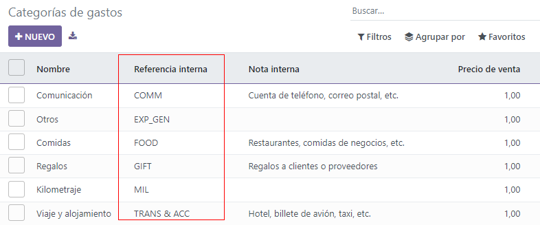Para añadir una referencia interna en una categoría de gastos, haga clic en la categoría para abrir el formulario. Introduzca la referencia interna en el campo. Debajo del campo Referencia interna, aparece esta frase: Utilizar esta referencia como prefijo en el asunto al enviar por correo electrónico.
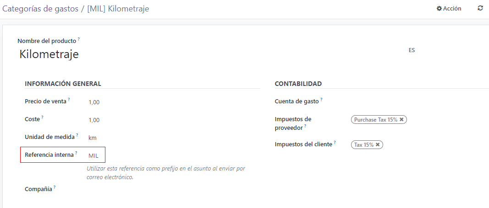Nota
Por razones de seguridad, Odoo solo acepta los correos electrónicos autenticados de empleados cuando se crea un gasto desde un correo electrónico. Para confirmar una dirección de correo electrónico de empleado autenticado, vaya a la tarjeta del empleado en la aplicación , y verifique el correo de trabajo.

Example
Si envía un gasto de alimento por correo electrónico por $25.00 durante un viaje de trabajo, el asunto del correo electrónico sería COMIDA $25.00.
Explicación:
La referencia interna para la categoría de gasto
alimentosesCOMIDA.El costo del gasto es
$25.00
Crear un reporte de gastos¶
Cuando los gastos estén listos para su envío (por ejemplo, al final de un viaje de negocios o una vez al mes), deberá crearse un reporte de gastos. Vaya al tablero principal de la aplicación , que mostrará la vista predeterminada Mis gastos, o vaya a la aplicación .
Los gastos se clasifican por colores según su estado. Cualquier gasto con un estado de Por reportar (gastos que aún no están en el reporte de gastos) el texto aparece en azul. Todos los demás estados (Por enviar, Enviado y Aprobado) aparecerán en negro.
Primero seleccione cada gasto específico para el reporte con un clic en la casilla de verificación que aparece junto a cada entrada, o seleccione todos los gastos de la lista con un clic en la casilla de verificación que aparece al lado de Fecha del gasto.
Otra forma de añadir todos los gastos que no están en un reporte de gastos es hacer clic en Crear reporte sin seleccionar ningún gasto, y Odoo seleccionará todos los gastos que tengan el estado Por enviar que no estén en un reporte.

Nota
Se puede seleccionar cualquier gasto de la lista Mis Gastos, independientemente de su estado. El botón Crear reporte estará visible siempre que haya un mínimo de 1 gasto con el estado Por reportar seleccionado. Al hacer clic en el botón Crear reporte, solo los gastos con un estado por enviar que no estén en otro reporte de gastos aparecerán en el nuevo reporte de gastos creado.
Una vez seleccionados los gastos, haga clic en el botón Crear reporte. El nuevo reporte mostrará todos los gastos listados en la pestaña Gastos. Si hay un recibo adjunto a un gasto individual, aparecerá un icono 📎 (clip) junto a las columnas Cliente al que se le va a volver a facturar y Distribución analítica.
El intervalo de fechas para los gastos aparecerá en el campo Resumen del reporte de gastos de forma predeterminada al crear el reporte. Le recomendamos que edite este campo con un breve resumen para cada reporte, esto le ayudará a mantener sus gastos organizados. Escriba una breve descripción para el reporte de gastos (como Viaje a Nueva York con un cliente, o Reparaciones para el coche de la empresa) en el campo Resumen del reporte de gastos. Después, seleccione un gerente del menú desplegable para asignar uno que revise el reporte. Si es necesario, puede cambiar el diario. Utilice el menú desplegable para seleccionar un diario diferente.
Si en el reporte no aparecen algunos gastos que deberían estar, todavía puede agregarlos. Haga clic en Agregar una línea en la parte inferior de la pestaña Gasto. Aparecerá una ventana emergente con todos los gastos disponibles que puede agregar al reporte (con el estado Por enviar), haga clic en la casilla correspondiente a cada gasto para agregarlo y después en Seleccionar. Los elementos ahora aparecen en el reporte que acaba de crear. Si necesita agregar un nuevo gasto que no aparece en la lista, haga clic en Nuevo para crear uno y agregarlo.

Nota
Puede crear reportes de gastos desde uno de estos tres lugares:
Vaya al tablero principal de la aplicación (puede acceder a él desde la aplicación ).
Vaya a la aplicación .
Vaya a la aplicación .
En cualquiera de estas vistas, haga clic en Nuevo para crear un nuevo reporte de gastos.
Presentar un reporte de gastos¶
Cuando se completa un reporte de gastos, el siguiente paso es enviar el reporte a un gerente para que lo apruebe. Es necesario enviar los reportes de forma individual, no por lotes. Abra el reporte correspondiente en la lista de reportes de gastos (si aún no lo ha abierto). Para ver todos los reportes de gastos, vaya a la aplicación .
Si la lista es grande, puede ser útil agrupar los resultados por estado, ya que solo es necesario enviar los reportes con estado por enviar, mientras que los reportes con estado aprobado o enviado no.
Los gastos por enviar se identifican fácilmente no solo por el estado por enviar, sino porque el texto aparece en azul, mientras que el texto de los demás gastos aparece en negro.
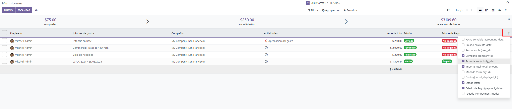Nota
El estado de cada reporte se muestra en la columna Estado de la derecha. Si la columna Estado no está visible, haga clic en el icono Opciones adicionales (dos puntos) situado al final de la fila y active Estado.
Haga clic en un reporte para abrirlo y, a continuación, haga clic en Enviar al gerente. Tras enviar un reporte, el siguiente paso es esperar a que el gerente lo apruebe.
Importante
Las secciones gastos/aprobar, gastos/registrar y gastos/reembolsar son solo para usuarios que cuenten con los derechos necesarios.
Aprobar gastos¶
En Odoo, no cualquiera puede aprobar reportes de gastos, esta acción se reserva a los usuarios con los derechos (o permisos) necesarios. Esto significa que un usuario debe ser responsable de aprobar en el equipo para la aplicación Gastos. Los empleados con los derechos necesarios pueden revisar los reportes de gastos, aprobarlos o rechazarlos, y proporcionar retroalimentación gracias a la herramienta integrada de comunicación.
Para ver quién tiene derechos de aprobación, vaya a la aplicación principal y haga clic en Administrar usuarios.
Nota
Si la aplicación Ajustes no está disponible, hace falta configurar algunos derechos en la cuenta. Revise la pestaña Derechos de acceso de la tarjeta de un usuario en la aplicación . La sección Administración (parte inferior derecha de la pestaña Derechos de acceso) está configurada con una de estas tres opciones:
Ninguno (vacío): el usuario no puede acceder a la aplicación Ajustes.
Derechos de acceso: el usuario solo puede ver la sección usuarios y empresas de la aplicación Ajustes.
Ajustes: el usuario tiene acceso completo a la aplicación Ajustes.
Consulte este documento para obtener más información sobre la gestión de usuarios y sus permisos de acceso.
Haga clic en una persona para ver su tarjeta, que muestra la pestaña Derechos de acceso en la vista predeterminada. Desplácese hacia abajo hasta la sección Recursos humanos. En Gastos, hay cuatro opciones:
Ninguno (en blanco): un campo en blanco significa que el usuario no tiene derechos para ver o aprobar reportes de gastos, y solo puede ver los suyos.
Responsable de aprobar en el equipo: el usuario solo puede ver y aprobar reportes de gastos para un equipo específico.
Aprobador total: el usuario puede ver y aprobar cualquier reporte de gastos.
Administrador: el usuario puede ver y aprobar cualquier reporte de gastos, así como acceder a los menús de reportes y configuración de la aplicación Gastos.
Los usuarios que pueden aprobar reportes de gastos (normalmente los gerentes) pueden ver fácilmente todos los reportes de gastos a los que tienen derechos de acceso. Vaya a la aplicación , y aparecerá una lista con todos los reportes de gastos que tengan un estado Por enviar, Enviado, Aprobado, Publicado, o Hecho. Los reportes de gastos con el estado Rechazado se ocultan en la vista de manera predeterminada.
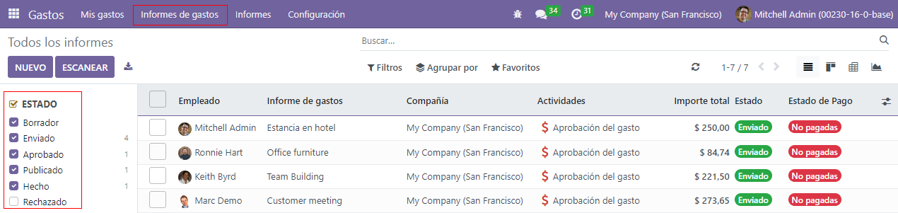Cuando se visualizan los reportes de gastos, verá un panel de filtros que pueden ser activar o desactivar en el lado izquierdo. Las tres categorías a las que se pueden aplicar filtros son Estado, Empleado y Empresa. Para ver solo los reportes de gastos con un estado determinado, active el filtro de estado específico. De igual manera puede desactivar el filtro de estado específico para ocultar los reportes con ese estado. Para ver los reportes de gastos de un empleado y/o empresa, habilite el filtro específico de nombre de empleado y/o empresa en las secciones Empleado y Empresa.
Puede aprobar los reportes de dos maneras (individual o varios a la vez) y rechazarlos solo de una manera. Para aprobar varios reportes de gastos a la vez, permanezca en la vista de lista. En primer lugar, seleccione los reportes que desea aprobar haciendo clic en la casilla situada junto a cada reporte, o haga clic en la casilla situada junto a Empleado para seleccionar todos los reportes de la lista.
Importante
Solo se pueden aprobar los reportes con el estado Enviado. Se recomienda mostrar únicamente los reportes enviados ajustando el filtro de estado de la parte izquierda y activando únicamente el filtro Enviado.
Si selecciona un reporte que no se puede aprobar, el botón Aprobar reporte no aparecerá, lo que indica que hay un problema con el reporte o reportes seleccionados.
Después deberá hacer clic en el botón Aprobar reporte.
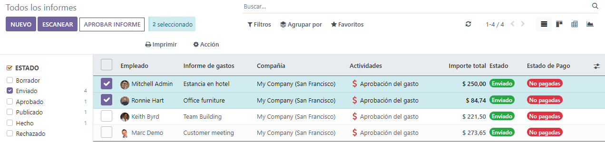Para aprobar un reporte individual, haga clic en un reporte, esto lo llevará a una vista detallada de ese reporte. En esta vista, podrá observar las siguientes opciones: Aprobar, Reporte en el siguiente recibo de nómina, Rechazar o Restablecer como borrador. Haga clic en Aprobar para aprobar el reporte.
Si hace clic en Rechazar, aparecerá una ventana emergente. Introduzca una breve explicación del rechazo en el campo Razón para rechazar el gasto y, a continuación, haga clic en Rechazar.
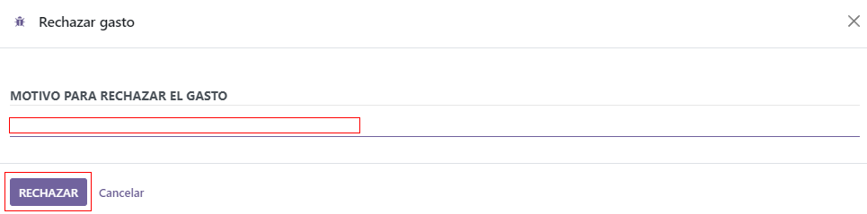Los gerentes de equipo pueden ver fácilmente todos los reportes de gastos de los miembros de su equipo. En la vista Reportes de gastos, haga clic en la flecha desplegable situada a la derecha del cuadro de búsqueda y haga clic en Mi equipo en la sección Filtros. Esto presenta todos los reportes del equipo del gerente.
Truco
Si necesita obtener más información, como un recibo faltante, puede comunicarse fácilmente desde el chatter. Si se encuentra en un reporte individual, solo debe hacer clic en Enviar mensaje para abrir el cuadro de texto de mensaje. Escriba un mensaje, etiquete a la persona correspondiente (si es necesario), y publíquelo en el chat haciendo clic en Enviar. El mensaje se publicará en el chatter y la persona etiquetada recibirá una notificación por correo electrónico, al igual que sus seguidores.
Solo puede etiquetar a seguidores en mensajes. Para conocer a los seguidores haga clic en el icono 👤 (persona) para ver a todos los seguidores del gasto.
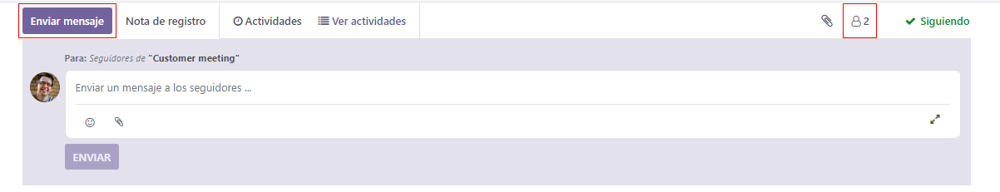Registrar gastos en Contabilidad¶
Una vez que se aprueba un reporte de gastos, deberá contabilizarlo en el diario contable. Para ver todos los reportes de gastos, vaya a la aplicación . Para ver solo los reportes de gastos aprobados y que se necesitan publicar, ajuste los filtros de la parte izquierda para solo activar el estado Aprobado.
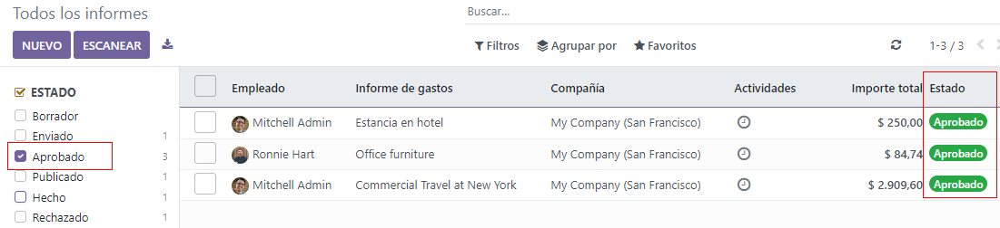Al igual que las aprobaciones, puede publicar los reportes de gastos de dos formas (individual o varios a la vez). Para publicar varios reportes de gastos a la vez, permanezca en la vista de lista. Primero seleccione los reportes que desea contabilizar haciendo clic en la casilla situada a lado de cada reporte, o haga clic en la casilla situada junto a Empleado para seleccionar todos los reportes de la lista. A continuación, haga clic en Publicar asientos.

Para publicar un reporte individual, haga clic en un reporte para ir a la vista detallada de ese reporte. En esta vista, se presentan varias opciones: Publicar asientos contables, Reporte en el siguiente recibo de nómina, Rechazar o Restablecer como borrador. Haga clic en Publicar asientos para publicar el reporte.
Si hace clic en Rechazar, aparecerá una ventana emergente. Introduzca una breve explicación de la denegación en el campo Razón para rechazar el gasto y, a continuación, haga clic en Rechazar. Puede ver los reportes en la aplicación , y ajustar los filtros de la izquierda de forma que solo se seleccione Rechazado.
Importante
Para publicar reportes de gastos en un diario contable, el usuario debe tener los siguientes derechos de acceso:
Contabilidad: Contador o asesor
Gastos: Responsable
Reembolsar a los empleados¶
Después de publicar un reporte de gastos en un diario contable, el siguiente paso es reembolsar al empleado. Para ver todos los reportes de gastos pendientes de pago, vaya a la aplicación .

Así como las aprobaciones y publicaciones, los reportes de gastos se pueden pagar de dos maneras (de manera individual o varias al mismo tiempo). Para pagara varios reportes de gastos al mismo tiempo, vaya a la vista de lista. Primero, seleccione los reportes por pagar haciendo clic en la casilla que se encuentra junto a cada reporte, o haga clic en la casilla junto a Empleado para seleccione todos los reportes en la lista. Luego, haga clic en Registrar pago.
Para pagar un reporte individual, haga clic en el reporte y vaya a la vista detallada de dicho reporte. Haga clic en Registrar pago para pagarle al empleado.
Aparecerá una ventana emergente de Registrar pago y, si es necesario, puede modificar los campos de Diario, Método de pago, y Fecha de pago. Cuando la selección sea la correcta, haga clic en Crear pago para enviar el pago al empleado.
Para pagar un reporte, haga clic en uno desde la vista de lista para ir a su respectiva vista detallada y haga clic en Registrar pago para pagarle al empleado. Aparecerá la ventana emergente Registrar pago, pero al pagar un solo reporte de gastos en lugar de varios a la vez aparecerán más opciones en la ventana emergente. Además de los campos Diario, Método de pago y Fecha de pago, aparecen los campos Cuenta bancaria receptora, Importe y Memo. Seleccione la cuenta bancaria del empleado con el menú desplegable para depositar el pago en su cuenta. Cuando todos los datos sean correctos, haga clic en Crear pago para enviar el pago al empleado.

Volver a facturar los gastos a los clientes.¶
Si los gastos están registrados en los proyectos de los clientes, entonces podrán ser facturados al cliente. Para ello, debe crear un gasto que haga referencia a la orden de venta a la que se debe agregar el gasto y después deberá crear el reporte correspondiente. Los gerentes deberán aprobar el reporte y el departamento de contabilidad deberá registrar los asientos contables. Por último, una vez que esté registrado en un diario, los gastos aparecerán en la orden de venta referenciada y la orden de venta podrá ser facturada, es decir, facturar al cliente por el gasto.
Configurar¶
Primero, especifique las políticas de facturación para cada categoría de gastos. Vaya a la . Haga clic en la categoría de gastos para abrir su formulario. En la sección Facturación, haga clic en el botón de radio que se encuentra junto a la selección deseada para Volver a facturar los gastos. Las opciones disponibles son No, Al costo, y Precio de venta.
Volver a facturar los gastos:
No: la categoría de gastos no se volverá a facturar.
Al costo: la categoría de gastos facturará los gastos con su costo real.
Precio de venta: la categoría de gastos se facturará al precio establecido en la orden de venta.
Crear un gasto¶
Primero, al crear un nuevo gasto, debe ingresar la información correcta para poder volver a facturar a un cliente. Seleccione la orden de venta donde aparecerá el gasto en la sección de Cliente al que se le volverá a facturar desde el menú desplegable. Luego, seleccione la Cuenta analítica en dónde se publicará el gasto. Después de crearlo, debe crear el reporte de gastos y subirlo como siempre.
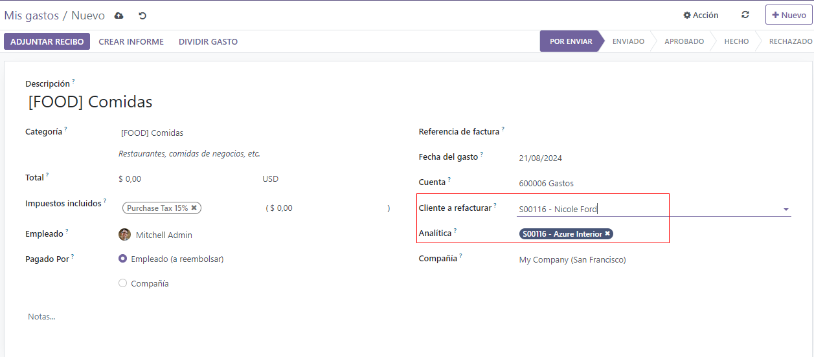Importante
Es de suma importancia seleccionar un Cliente a quien se le volverá a facturar al crear un gasto, pues es lo que hace que los gastos se facturen de manera automática después de aprobar el reporte de gastos.
El campo Cliente a quien se le volverá a facturar se puede modificar hasta que el reporte se apruebe. después ya no podrá modificar el campo.
Validar y publicar gastos¶
Solo los empleados con permisos (casi siempre gerentes o supervisores) pueden aprobar gastos. Antes de aprobar un reporte de gastos, asegúrese de que la Distribución analítica esté establecida en cada línea de gastos de un reporte. Si hace falta una Distribución analítica, asigne las cuentas correspondientes desde el menú desplegable, y luego haga clic en Aprobar o Rechazar.
El departamento de contabilidad es casi siempre el encargado de publicar los asientos contables. Una vez que se aprobó el reporte de gastos, se puede publicar. La orden de venta solo se actualiza después de que se publican los asientos contables. Una vez publicados, los gastos aparecen en la orden de ventas referenciada.
Gastos de factura¶
Una vez que la orden de venta se actualizó, ya puede facturar al cliente. Después de aprobar el reporte de gastos y publicar los asientos contables, haga clic en el botón inteligente de Ordenes de venta para abrir la orden de ventas. Los gastos que se volverán a facturar aparecerán ahora en la orden de ventas.
Nota
Puede referenciar mas de una orden de ventas en un reporte de gastos. Si lo hace, el botón inteligente de Ordenes de venta mostrará el número de ordenes de venta. Si hay varias, el botón inteligente abrirá una vista de lista de todas las ordenes de venta en el reporte de gastos. Haga clic en una orden de venta para abrirla individualmente.
Los gastos aparecerán en la pestaña Líneas de la orden en la orden de ventas.
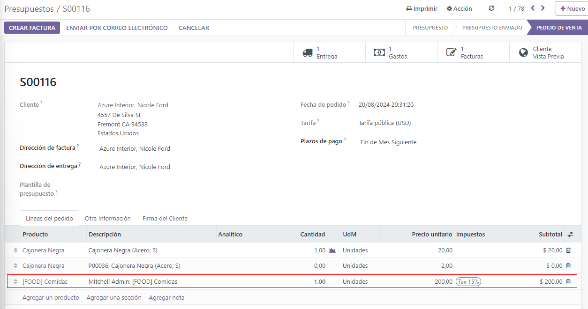Luego, haga clic en Crear factura y seleccione si la factura será Factura regular, Anticipo (porcentaje), o un Anticipo (importe fijo) haciendo clic en el botón de radio que aparece junto a él. Luego, haga clic en Crear factura. Finalizó la facturación de gastos a un cliente.